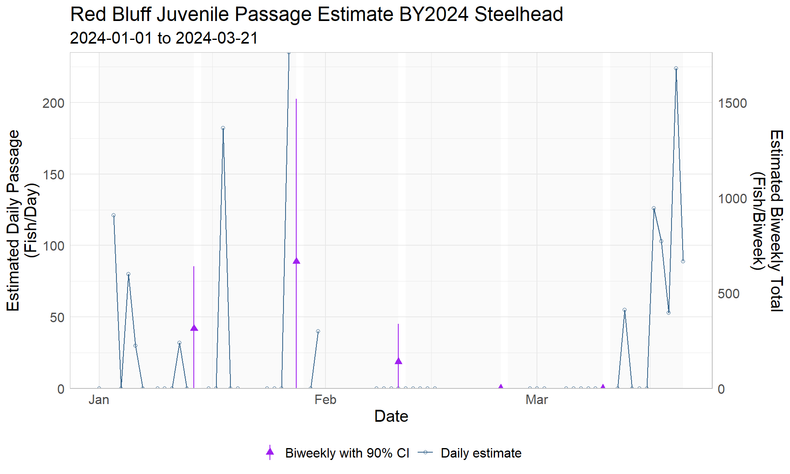
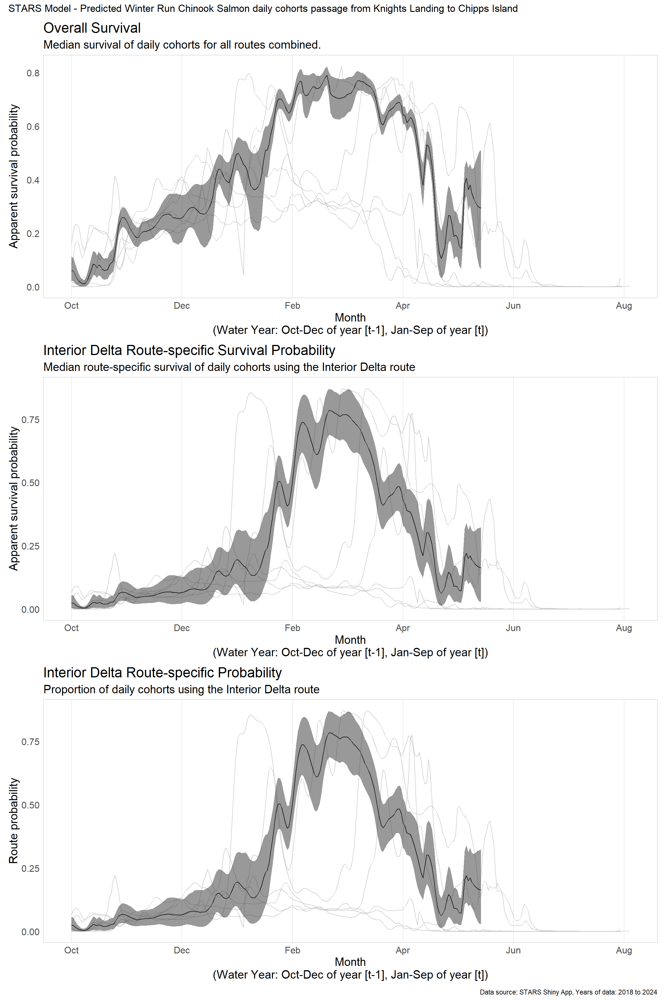
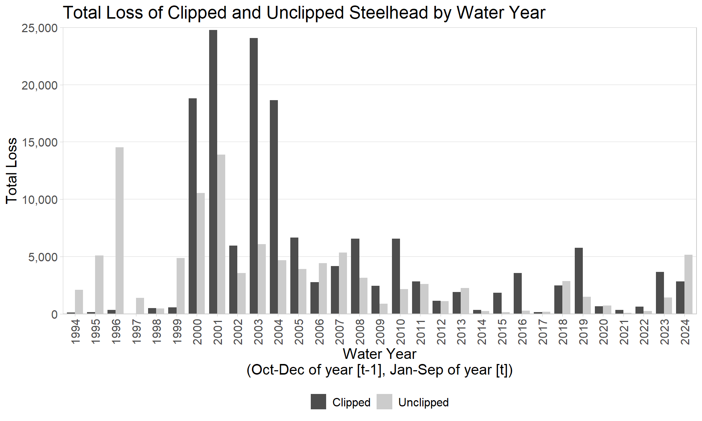
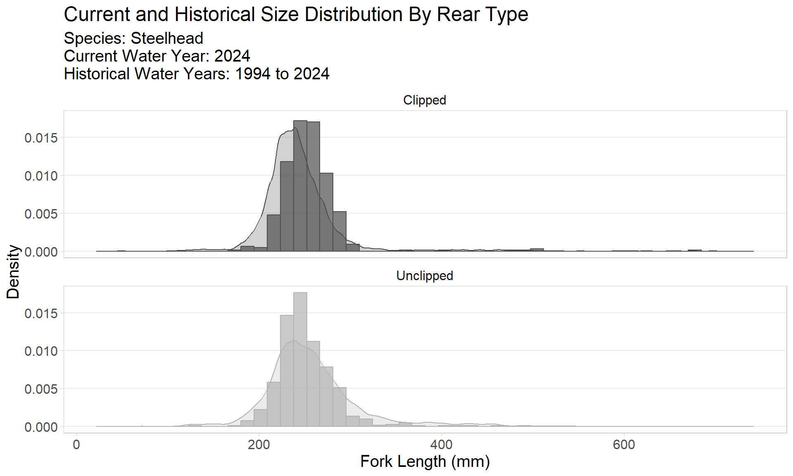
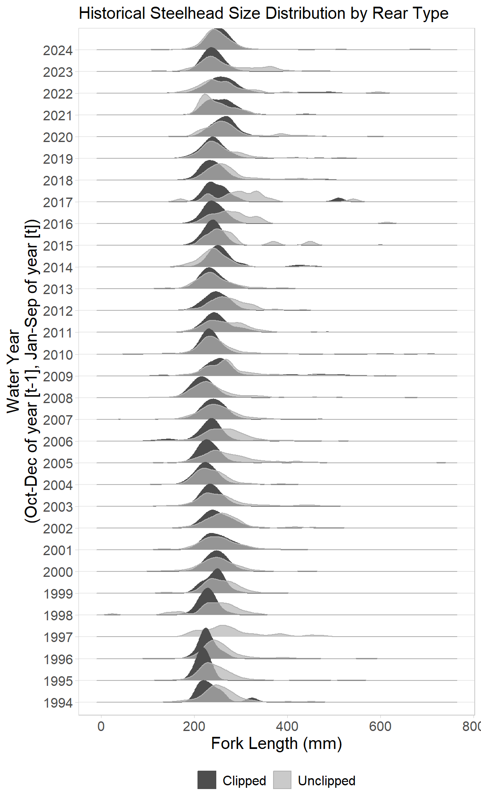

Track-a-Cohort: Steelhead
Objective
Using shared resources via BDO github from BOR, replicate figures and adjust to include dynamic data. See Track a cohort_Steelhead.docx for figures requested. Also consider future additions including more interactive capabilities to certain graphs in form of Rmarkdown and/or shinyapp
Figure 1. RBDD Juvenile Passage Estimates
Related links: SacPas Page, GitHub Repo Code
- Issues:
- Update biweekly shaded areas based on SI generated methods
Figure 2. Survival and Routing Probabilites
Note: Using Winter-run Chinook as a surrogate for Steelhead
Option 1: Facetted by year
Option 2: Without faceted years

Related links: SacPas Page, Interactive Plot, GitHub Repo Code, STARS ShinyApp
Figure 3. Comparison of Clipped and Unclipped Loss
Figure 3a. Total Loss of Clipped and Unclipped Steelhead

Related links: SacPas Page, GitHub Repo Code
Figure 3b. Size Distribution of Loss

Related links: SacPas Page, GitHub Repo Code
Figure 3c. Size Distribution of Steelhead Loss By Year

Related links: SacPas Page, GitHub Repo Code
Figure 4. Cumulative Loss

Related links: SacPas Page, GitHub Repo Code
Figure 5. Cumulative Loss with Single-Year Thresholds

Related links: SacPas Page, ShinyApp, GitHub Repo Code
- Issues:
- Confirm Single-Year-Thresholds and update to generate automatically
- Confirm only including unclipped
Table 1. Minimization of Cumulative Loss of Hatchery Steelhead
*Pending steelhead hatchery release information
| Water Year | Total Loss | Total released | Percent of fish released lost to facilities | Brood Year |
|---|---|---|---|---|
| 1994 | 125.25 | NA | NA | 1993 |
| 1995 | 146.72 | NA | NA | 1994 |
| 1996 | 330.74 | NA | NA | 1995 |
| 1997 | 4.33 | NA | NA | 1996 |
| 1998 | 496.44 | NA | NA | 1997 |
| 1999 | 555.64 | NA | NA | 1998 |
| 2000 | 18795.42 | NA | NA | 1999 |
| 2001 | 24779.83 | NA | NA | 2000 |
| 2002 | 5957.45 | NA | NA | 2001 |
| 2003 | 24077.48 | NA | NA | 2002 |
| 2004 | 18643.98 | NA | NA | 2003 |
| 2005 | 6661.86 | NA | NA | 2004 |
| 2006 | 2758.54 | NA | NA | 2005 |
| 2007 | 4173.84 | NA | NA | 2006 |
| 2008 | 6558.86 | NA | NA | 2007 |
| 2009 | 2439.11 | NA | NA | 2008 |
| 2010 | 6548.28 | NA | NA | 2009 |
| 2011 | 2823.07 | NA | NA | 2010 |
| 2012 | 1141.16 | NA | NA | 2011 |
| 2013 | 1901.95 | NA | NA | 2012 |
| 2014 | 327.83 | NA | NA | 2013 |
| 2015 | 1841.19 | NA | NA | 2014 |
| 2016 | 3566.87 | NA | NA | 2015 |
| 2017 | 164.29 | NA | NA | 2016 |
| 2018 | 2462.90 | NA | NA | 2017 |
| 2019 | 5777.70 | NA | NA | 2018 |
| 2020 | 659.44 | NA | NA | 2019 |
| 2021 | 341.69 | NA | NA | 2020 |
| 2022 | 639.79 | NA | NA | 2021 |
| 2023 | 3650.30 | NA | NA | 2022 |
| 2024 | 2828.56 | NA | NA | 2023 |
Related links: SacPas Page, GitHub Repo Code
- Issues:
- Update with steelhead hatchery release information when becomes available
Figure 6. Daily Loss, Exports, and Pumping Rates by Facility
Related links: SacPas Page, ShinyApp, GitHub Repo Code
- Issues:
- Update with SacPas generated link for Export data per Facility, closest data found: https://www.cbr.washington.edu/sacramento/tmp/juvloss_1719955580_301.html, which is used in figure. Does not delineate between facility. Also, requires selection of current year, species and rear-type, and management year type. Update with query string that can pull current year data for steelhead.
Figure 7. Tillotson Steelhead Loss
Related links: SacPas Page, SacPas Tillotson Tool, GitHub Repo Code
- Issues:
- Run model or pull Tillotson data from tool?
Table 2. Predicted and Observed Loss
| Date | Total Daily Loss | Average Export (TAF) | Average OMRI (cfs) | Average OMR (cfs); 5d USGS tidally filtered |
|---|---|---|---|---|
| 2023-10-07 | NA | 9.597429 | -4049.2857 | -6004.0000 |
| 2023-10-14 | NA | 5.380429 | -1941.2857 | -3771.4286 |
| 2023-10-21 | NA | 2.448143 | -600.8571 | -2033.5714 |
| 2023-10-28 | NA | 7.471429 | -2581.1429 | -2551.0000 |
| 2023-11-04 | NA | 10.736429 | -4486.4286 | -5678.2857 |
| 2023-11-11 | NA | 7.710857 | -3255.5714 | -4953.1429 |
| 2023-11-18 | NA | 8.408143 | NA | -4167.2857 |
| 2023-11-25 | NA | 9.031143 | -3914.4286 | -5231.7143 |
| 2023-12-02 | NA | 8.649000 | NA | -4157.7143 |
| 2023-12-09 | NA | 11.088857 | -5030.1429 | -5887.7143 |
| 2023-12-16 | NA | 12.738571 | -5740.5714 | -6134.8571 |
| 2023-12-23 | NA | 15.283714 | -6747.7143 | NA |
| 2023-12-30 | NA | 13.266714 | -5791.0000 | NA |
| 2024-01-06 | NA | 11.889714 | -4983.1429 | -5618.8571 |
| 2024-01-13 | NA | 10.801714 | -4324.4286 | -5259.1429 |
| 2024-01-20 | NA | 8.813000 | -2932.1429 | -4535.4286 |
| 2024-01-27 | NA | 7.499714 | -2004.1429 | -2835.8571 |
| 2024-02-03 | NA | 12.286143 | -3059.7143 | -3832.0000 |
| 2024-02-10 | NA | 14.461571 | NA | -4415.7143 |
| 2024-02-17 | NA | 13.103000 | -2402.1429 | -3691.1429 |
| 2024-02-24 | NA | 14.003000 | NA | -3390.2857 |
| 2024-03-02 | NA | 14.502143 | -2477.8571 | -3290.8571 |
| 2024-03-09 | NA | 8.983000 | -992.8571 | -2597.2857 |
| 2024-03-16 | NA | 5.741000 | -505.1429 | -1290.2857 |
| 2024-03-23 | NA | 6.851429 | -972.8571 | -2946.2857 |
| 2024-03-30 | NA | 7.733857 | -1652.2857 | -3190.2857 |
| 2024-04-06 | NA | 5.976000 | -904.0000 | -2213.5714 |
| 2024-04-13 | NA | 3.086143 | 641.0000 | -15.0000 |
| 2024-04-20 | NA | 3.164857 | 470.5714 | -304.8571 |
| 2024-04-27 | NA | 4.293429 | -342.1429 | -849.1429 |
| 2024-05-04 | NA | 2.911000 | 157.4286 | -1005.8571 |
| 2024-05-11 | NA | 5.321000 | -127.4286 | -864.4286 |
| 2024-05-18 | NA | 6.249429 | 173.7143 | -1322.1429 |
| 2024-05-25 | NA | 8.153857 | -1798.2857 | -2593.1429 |
| 2024-06-01 | NA | 9.821000 | -3758.5714 | -4588.5714 |
| 2024-06-08 | NA | 11.456000 | -5027.8571 | -6044.5714 |
| 2024-06-15 | NA | 10.427286 | -4690.8571 | -5902.2857 |
| 2024-06-22 | NA | 11.994857 | -5199.5714 | -6220.8571 |
| 2024-06-29 | NA | NA | NA | NA |
Related links: SacPas Page, GitHub Repo Code - Issues: - Confirm table uses unclipped for summary - Identify methods used for predicted column - Confirm table should include weekly? averages for current water year. How are averages calculated? - Confirm OMR or OMRI is used, alternatively include both?